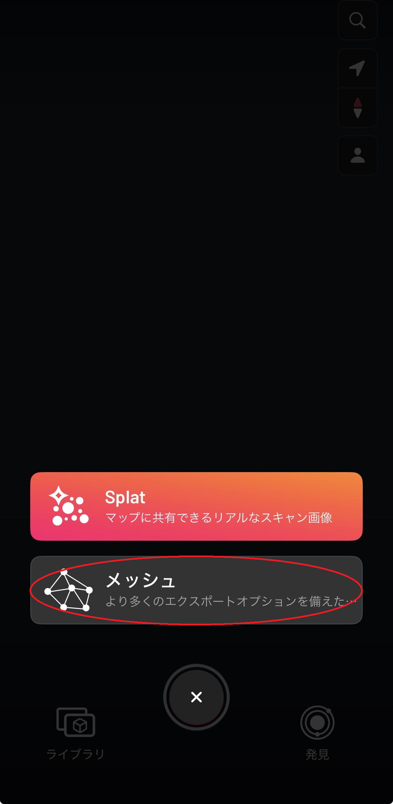
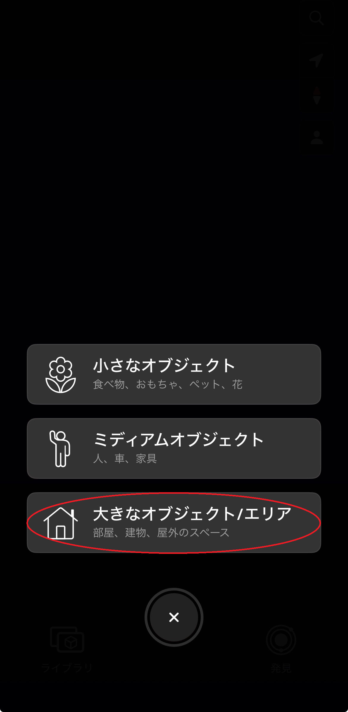
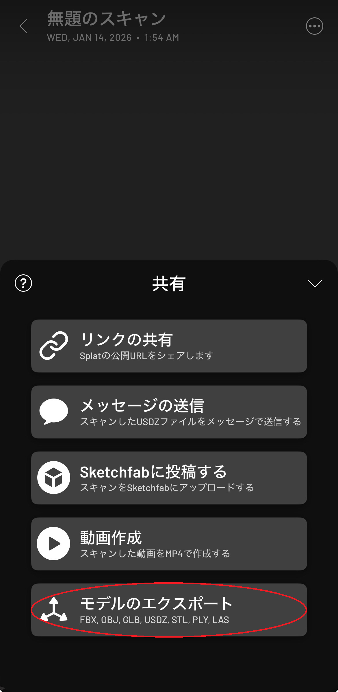
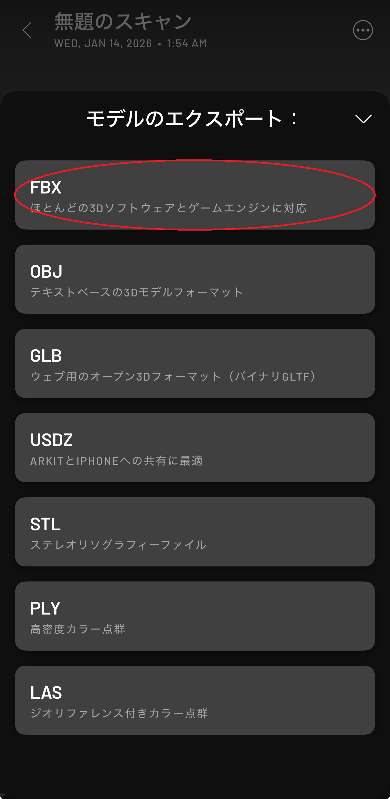
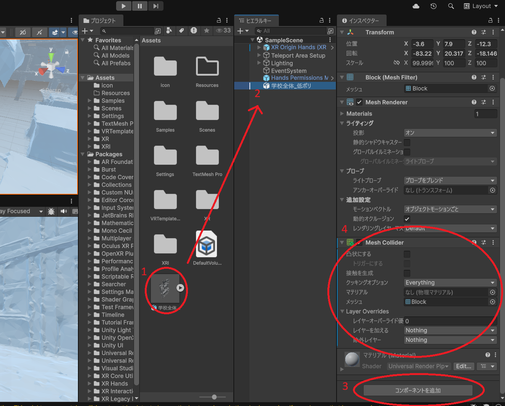
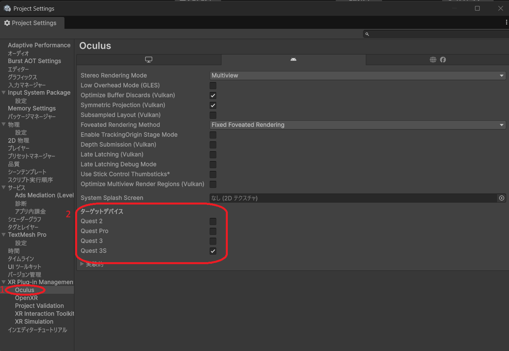

前提アプリ/前提条件
- Unity (推奨6000.2.15f1)
- Blender (推奨3.2~)
- Meta Quest (開発者モード有効)
01
現地スキャンとデータ収集
まずは対象となる建物のデジタルデータを取得します。スマートフォン（iPhone Proシリーズ推奨など） でscaniverseアプリを使用してスキャンします。
- モード選択: "splat"ではなく、必ず"メッシュ"を選択してください。
- 手法: "大きなオブジェクト"を選択し、建物の外周360度と内部空間を漏れなく撮影します。
- 環境: 天候は曇りがベストです（強い影を防ぐため）。ガラスなどの反射素材は正確にスキャンできない場合がある点に注意してください。




02
3Dモデルの最適化・軽量化
スキャンした生データは不要な頂点や頂点過多でデータが重くなる可能性があります。そのため、Blenderで処理を行います。大規模なものでなければSTEP2は省略しても構いません。
保存したモデルを開き、「共有」→「エクスポート」→「FBX」を選択してエクスポートしPCに転送してください。
Blenderに取り込み、以下の処理を行います：
- モデルをインポートする
- インポートしたモデルを選択し、モディファイアーからデシメートを選択
- "束ねる"を選択し、モデルが崩れない程度に削減する
- FBX形式でエクスポートする 参考文献
03
アプリに組み込む
Unityを使い、Meta Quest向けアプリを作成します。ばーちゃるずプロジェクト一覧に飛び、「ゲストとしてログイン」→「VRアプリ」→「VR体験」にあるzipをダウンロードします。
zipを解凍し、Unityを開き、以下の処理を行います：
- モデルをインポートする
- モデルをヒエラルキーにドラッグ&ドロップする
- モデルのコンポーネントにmeshcolliderを付与する
- 左上のメニューから「編集」→「プロジェクト設定」→「Oculus」→ VRゴーグルの種類に応じてターゲットデバイスを指定する
- 左上のメニューから「ファイル」→「ビルドして実行」を選択する

